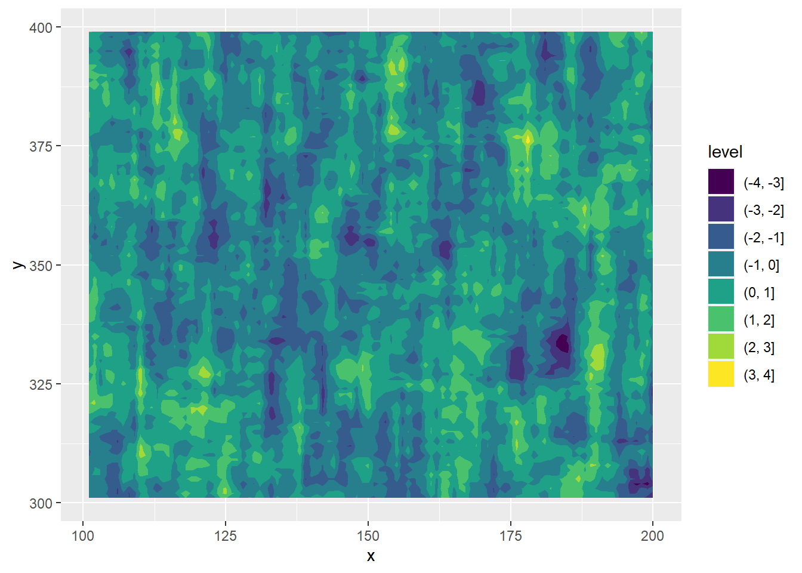
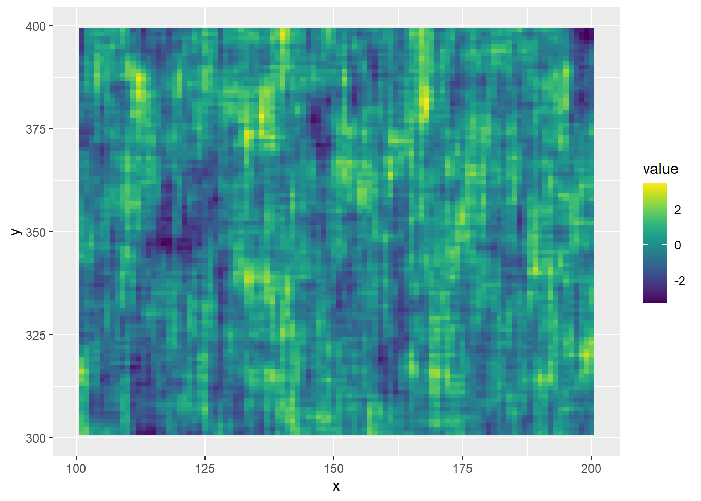
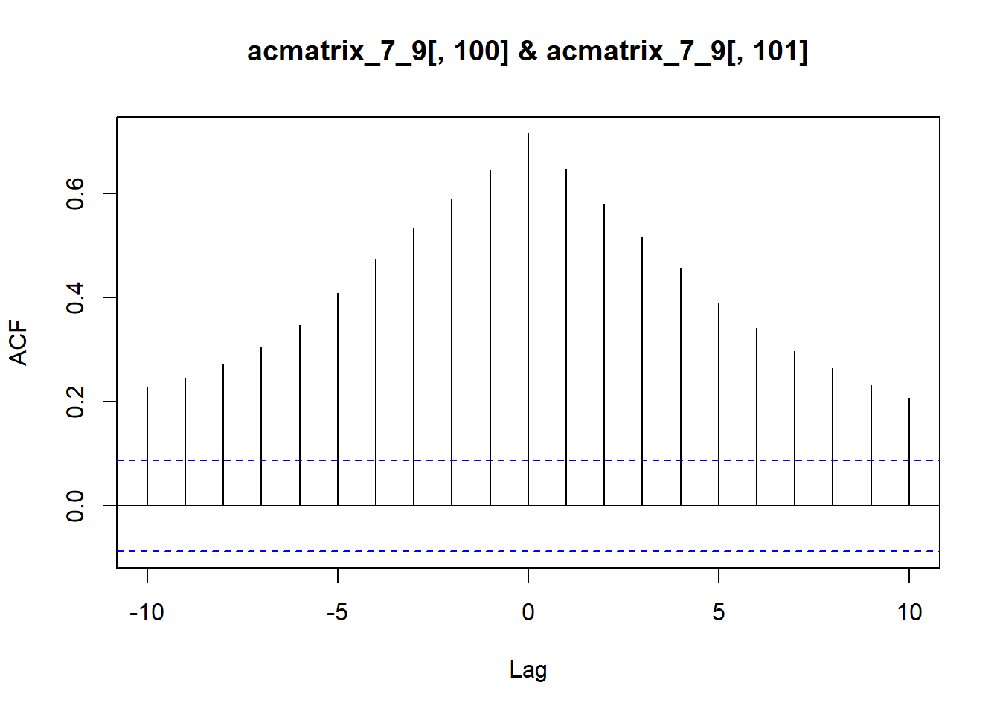
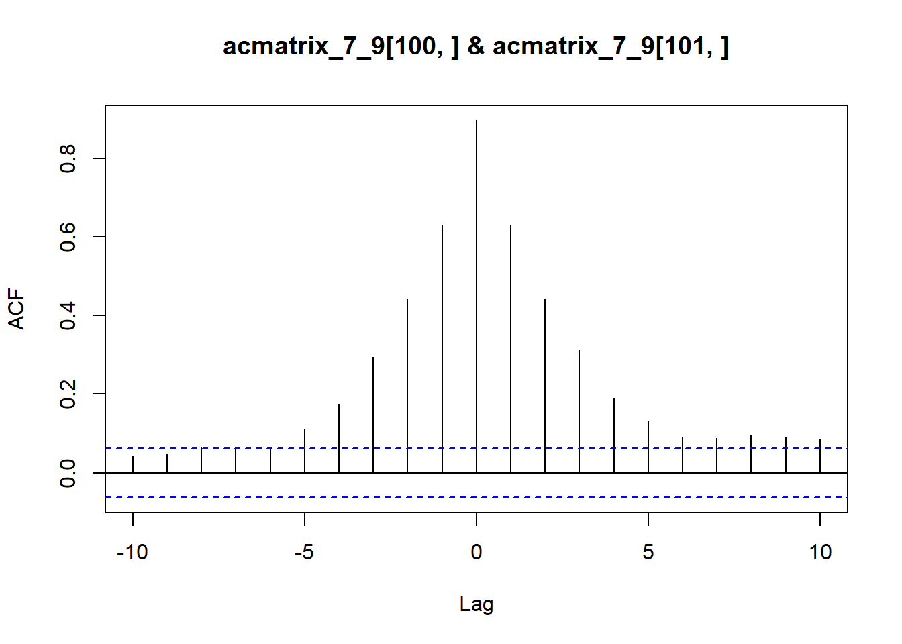

knitr::opts_knit$set(root.dir = rprojroot::find_rstudio_root_file())2d autocorrelation
library(tidyverse)2-dimensional autocorrelation
Motivation
I often need to simulate processes that are autocorrelated in two dimensions. Sometimes that’s time and 1d space, sometimes 2d space. Clearly 3d is likely needed as well, and I’ll update this with that once I get to it.
This is code that builds on work I’ve done in a couple projects, both across matlab and R. I’m doing it here in R because that’s the most up to date and open-source, but the matlab translation is straightforward.
We want to be able to generate a set of values with given statistical properties- means, standard deviations, and correlations in both dimensions. For the moment, I’m developing this with a gaussian random variable, but extensions to other random variables that are transforms from gaussian are relatively straightforward by backcalculating the needed \(\mu\) and \(\sigma\). Care must be taken if the correlations need to also be defined on the final scale.
Future/elsewhere
I’ve done the back-calculations for the lognormal to allow setting desired correlations, means, and variances on the lognormal scale, and will add it in here later as an example. Likewise, we might want to set the correlation length \(\tau\) rather than the correlation \(\rho\), and in that case we need to back-calculate \(\rho\) from the desired \(\tau\). I’ve done that as well and will add it in. Finally, I have written up the math to obtain the equations used in this function, and will add that later as well.
Process
The goal is a U matrix that is 2d AC, on the normal scale
- Set up autocorrelation in the y dimension in U with a usual \(y+1 = y*\rho + a\) formulation, where \(a\) is uncorrelated errors
- Set up autocorrelation in the x dimension
- the errors here (\(\varepsilon\) matrix) need to be correlated in the y dimension
- these errors are thus generated by an AC process and so need their own set of errors (which are uncorrelated) for that AC
Variances are set for all error matrices (\(a\), \(\varepsilon\), and sub-errors (\(z\) matrix)) according to the relationships between normVar (the desired \(\sigma^2\) of the final distribution) and the \(\rho_y\) and \(\rho_x\) (the desired correlations in both dimensions).
Function
I usually do a bunch of demos, but here I’ve developed this and just want it available more easily. So I’ll lead with the function and then demonstrate it and a few extensions.
ac2d <- function(n_x, n_y,
rho_y = 0, rho_x = 0,
normVar = 1,
printStats = FALSE,
returnStats = FALSE) {
# n_x = number of sites along the x-dimension
# n_y = number of sites along the y-dimension
# rho_y = desired autocorr in the x direction
# rho_x = desired autocorr in the y direction
# normVar = desired variance of the underlying normal distribution
# The goal is a U matrix that is 2d AC, on the normal scale
# make the U matrix as rnorms to initialise
U <- matrix(rnorm(n_x*n_y)*sqrt(normVar), nrow = n_y)
# Set up the errors for the y process alone
# generate the errors - set the SD of these (hence the sqrt around the
# variance)
a <- rnorm(n_y) * sqrt((normVar*(1-rho_y^2)))
# Make the y ac for the U matrix
for (i in 1:(n_y-1)) {
U[i+1, ] <- (rho_y * U[i, ]) + a[i]
}
# Set up for the x-autocorr, which needs to have errors autocorred in the y-dimension
# first, generate a z error matrix- these are the errors for epsilon, which
# are in turn the errors for U(t,x).
# What should var(z) be theoretically?
varZ <- normVar*(1-rho_y^2)*(1-rho_x^2)
# Make z, adjusting its standard deviation
# should have 'y' rows
z <- matrix(rnorm(n_x*n_y), nrow = n_y) *
(sqrt(normVar * (1-rho_y^2) * (1-rho_x^2)))
# now let's generate an epsilon matrix
# These are the errors for x part of the 2d ac process. These errors are
# themselves autocorrelated in the y dimension.
vareps <- normVar * (1-rho_x^2)
eps <- matrix(rnorm(n_x*n_y), nrow = n_y) * sqrt(vareps)
# Now, generate the eps matrix y-autocorrelated (that is, going down rows within each column)
# eps is already created, so just write into the rows
for (i in 1:(n_y-1)) {
eps[i+1, ] <- (rho_y * eps[i, ]) + z[i, ]
}
# Now, make the U matrix x-autocorrelated
for (t in 1:(n_x-1)) {
U[ ,t+1] <- (rho_x * U[ ,t]) + eps[ ,t]
}
# Check the stats if asked
if (printStats | returnStats) {
# calc stats in both dimensions
acstats <- ac2dstats(U)
if (printStats) {
print(paste0('Mean of all points is ', round(mean(c(U)), 3)))
print(paste0('Var of all points is ', round(var(c(U)), 3)))
print(paste0('Mean y AC is ', round(mean(acstats$ac_y), 3)))
print(paste0('Mean x AC is ', round(mean(acstats$ac_x), 3)))
}
}
# usually don't want a list with the stats, and can always get later if needed, I suppose
if (returnStats) {
return(lst(U, acstats))
} else {
return(U)
}
}That potentially calls another function to get the stats, which is here.
# 2d ac stats function, useful for calling elsewhere
ac2dstats <- function(acmatrix) {
# Calculate the autocorrs in both dimensions
# Conditionals on 0 variance are because ar throws an error if there's no variance. Could have set up a try, but this is clearer
# Using 1 as the ac in that case because with no variance each value is the same as previous and so perfectly correlated. NA would be another option.
# Get the ac in x-dimension: do this for each y (row)
ac_x <- vector(mode = 'numeric', length = nrow(acmatrix)-1)
for (i in 1:(nrow(acmatrix)-1)) {
if (sd(acmatrix[i, ]) == 0) {
ac_x <- 1
} else {
ac_x[i] <- acf(acmatrix[i, ], lag.max = 1, type = 'correlation', plot = FALSE, demean = TRUE)$acf[2]
}
}
# Get the ac acorss the stream: do this for each x (column)
ac_y <- vector(mode = 'numeric', length = ncol(acmatrix)-1)
for (i in 1:(ncol(acmatrix)-1)) {
if (sd(acmatrix[,i]) == 0) {
ac_y[i] <- 1
} else {
ac_y[i] <- acf(acmatrix[ ,i], lag.max = 1, type = 'correlation', plot = FALSE, demean = TRUE)$acf[2]
}
}
return(lst(ac_y, ac_x))
}Testing
A couple edge cases to make sure it doesn’t break. 0 and 1 correlations.
acmatrix_0_1 <- ac2d(n_x = 1000, n_y = 500,
rho_x = 0, rho_y = 1,
normVar = 1, printStats = TRUE)[1] "Mean of all points is 0.028"
[1] "Var of all points is 0.976"
[1] "Mean y AC is 1"
[1] "Mean x AC is 0.043"0 variance, but try to set autocorrelations- forces all points equal, which is right.
acmatrix_0_1 <- ac2d(n_x = 1000, n_y = 500,
rho_x = 0.7, rho_y = 0.9,
normVar = 0, printStats = TRUE)[1] "Mean of all points is 0"
[1] "Var of all points is 0"
[1] "Mean y AC is 1"
[1] "Mean x AC is 1"Demonstration
How do we use that? Let’s say we want to create an environment that is 1000 x 500 sites, with \(\rho_y = 0.9\) and \(\rho_x = 0.7\), with the whole environment having a variance of 1 (for simplicity).
Setting printstats = TRUE prints out the statistics and confirms the final matrix has been created with the desired correlations.
acmatrix_7_9 <- ac2d(n_x = 1000, n_y = 500,
rho_x = 0.7, rho_y = 0.9,
normVar = 1, printStats = TRUE)[1] "Mean of all points is 0.021"
[1] "Var of all points is 0.993"
[1] "Mean y AC is 0.89"
[1] "Mean x AC is 0.698"We can plot that up, easiest is to use ggplot because that’s what I’m used to. First, make it a tibble
actib_7_9 <- tibble::as_tibble(acmatrix_7_9) %>%
mutate(y = row_number()) %>%
pivot_longer(cols = starts_with('V')) %>%
mutate(x = as.numeric(str_remove(name, 'V'))) %>%
select(-name)Warning: The `x` argument of `as_tibble.matrix()` must have unique column names if
`.name_repair` is omitted as of tibble 2.0.0.
ℹ Using compatibility `.name_repair`.Plot it two different ways. It’s a monster though, so cut it to just a 100x100 block.
First, a contour
ggplot(filter(actib_7_9, x > 100 & x <= 200 & y > 300 & y < 400), aes(x = x, y = y, z = value)) +
geom_contour_filled()
And a tiled version, which is more precisely the data.
ggplot(filter(actib_7_9, x > 100 & x <= 200 & y > 300 & y < 400), aes(x = x, y = y, fill = value)) +
geom_tile() +
viridis::scale_fill_viridis(option = 'viridis')
Extensions
2 species
A crude step toward 3d autocorr is to say we want 2d autocorr for two species (or really, just a second set of 2d autocorrelated values) with known correlation to the first set. I’ve done that, but it’s very task-specific and so not including here until I generalise a bit better.
Cross-correlation
By definition, the 2d autocorrelated matrices here have embedded nonzero cross-correlations at different lags (see analytical work for what they are once I put it in here). As a quick example, we can use ccf to get the cross correlation between two adjacent vectors along the x-dimension (columns), or the same along the y-dimension (rows).
Columns
ccf(x = acmatrix_7_9[,100], y = acmatrix_7_9[,101], lag.max = 10, type = 'correlation')
Rows
ccf(x = acmatrix_7_9[100,], y = acmatrix_7_9[101,], lag.max = 10, type = 'correlation')